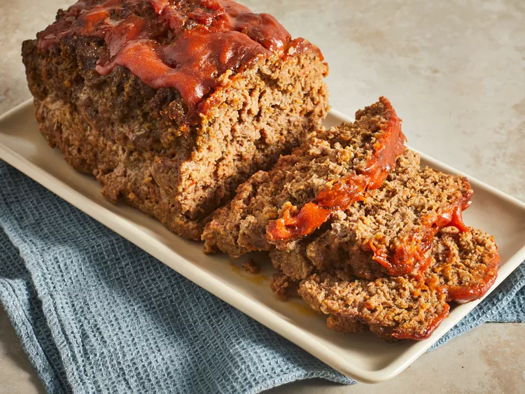

Meatloaf
This traditional meatloaf recipe made with sautéed vegetables, spices, and bread crumbs is moist and flavorful and topped with an old-fashioned glaze. Cook time will depend on the size and shape of your loaf, as well as the type of baking pan you use. Serve this hearty meal on cool fall or winter evenings with mashed potatoes and a simple mushroom gravy.
- Ground Beef
- Vegetables
- Bread Crumbs
- Worcestershire Sauce
- Egg
- Spices
- Preheat oven to 325 degrees F
- Process vegatables, place in mixing bowl
- Add ground beef to vegetables. Cobine with bread crumbs
- Shape mixture into loaf pan
- Bake for 15 minutes
- Create glaze, stir brown sigar, ketchup and mustard
- Glaze meatloaf
- Bake loaf for antoth 45 to 75 minutes
- Enjoy!
